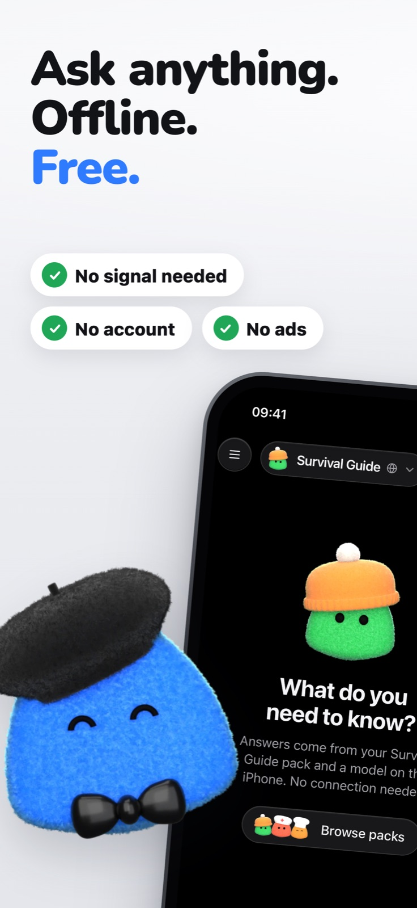
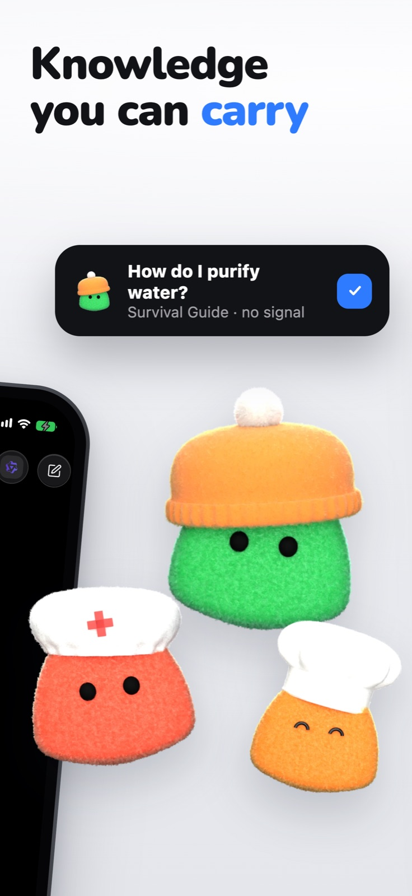
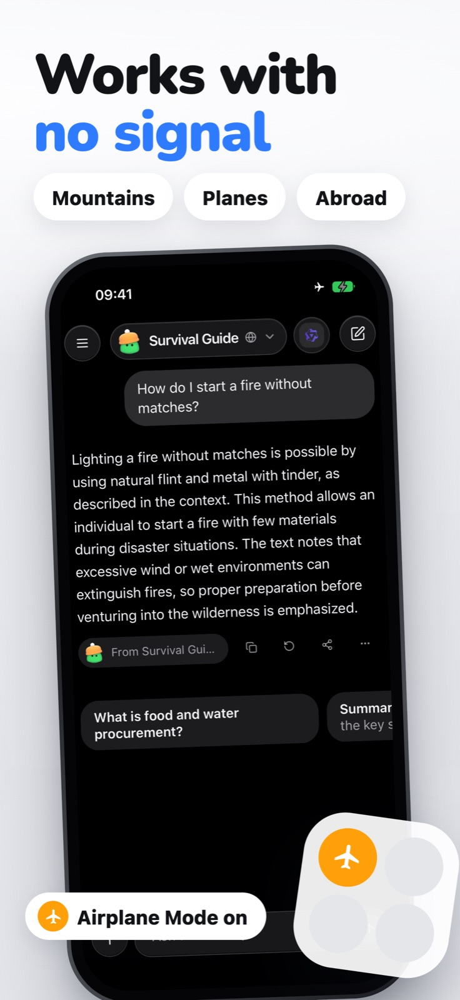
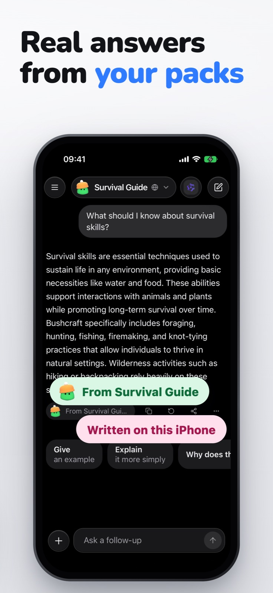
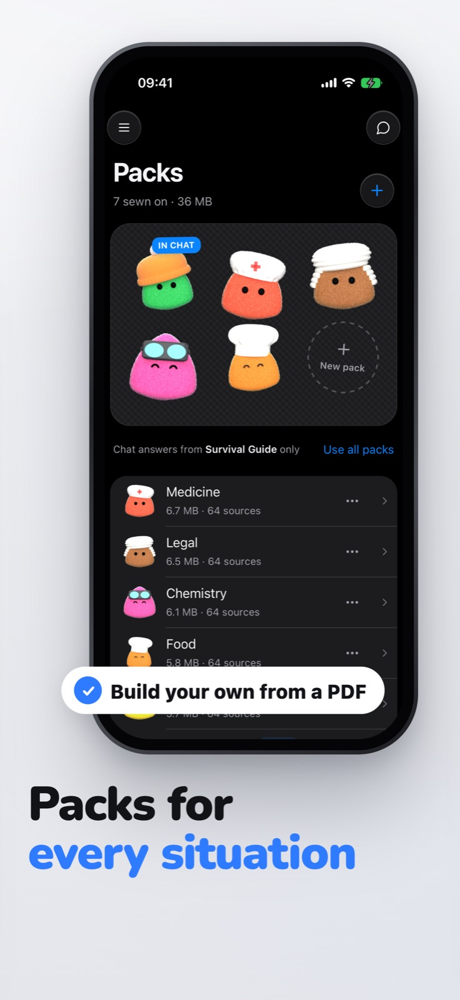
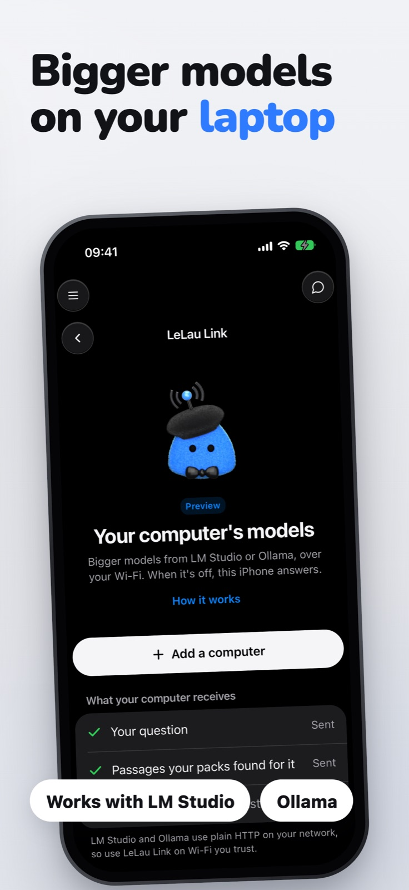
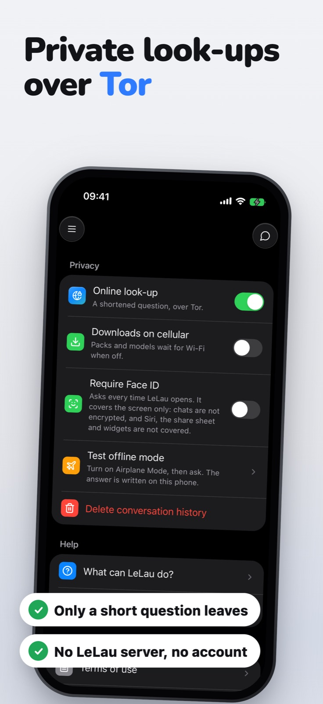
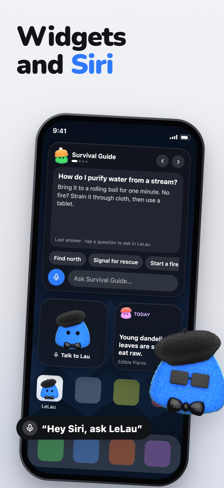
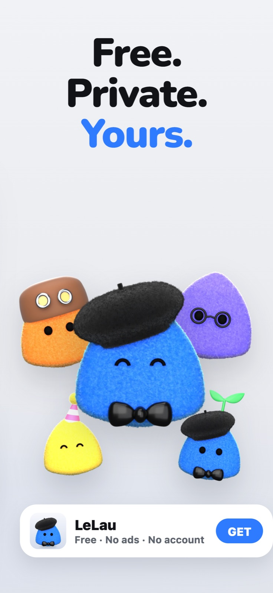

Press kit
For interviews, questions or assets, email support@lelau.org. Replies within 24 hours.
In one paragraph
LeLau is a free iPhone app that answers questions with no internet connection. It searches knowledge packs stored on the phone (six come with it, and you can build your own from PDFs, notes or a Wikipedia topic) and writes the answer with an AI model that runs on the phone, which you choose. There is no account, no server and no telemetry: LeLau is built so that nobody, including its developer, can see what you ask. Optional web look-up goes through an embedded Tor client and fails closed. The app is free, with no ads and no in-app purchases.
In one sentence
AI that works on a plane, and no one, not even us, can see what you asked.
Facts
- Platform: iPhone, iOS 16.4 or later. Answer models are separate, optional downloads, and LeLau only offers the ones that fit the iPhone's memory.
- Price: free. No ads, no subscription, no in-app purchases.
- Answer models: chosen by the user and run on the iPhone. Gemma 4 E2B (2.8 GB, iPhones with 8 GB of memory) is recommended; Granite 4.0 H 1B (0.9 GB) and Qwen 3.5 0.8B (0.5 GB) are smaller; Llama 3.2, LFM 2.5, SmolLM 3, Ministral 3, MiniCPM 5 and Bonsai are also offered. In LeLau's test of 350 real questions, Gemma 4 E2B answered 73% well against 47% for Qwen 3.5 0.8B. With no model installed, LeLau quotes the passages it finds.
- Search models in the app: EmbeddingGemma 2 (q4) finds matching passages in many languages; the mxbai-rerank-base-v1 cross-encoder orders them.
- Privacy: no account, no analytics, no LeLau server. The App Store privacy label reads "Data Not Collected". Settings includes an airplane-mode test so you can check the claim yourself.
- Network: normal chat uses none. Web look-up, optional, goes through an embedded Tor client and fails closed. Model downloads go directly to Hugging Face by default, or through Tor if the user chooses.
- Siri and widgets: "Hey Siri, ask LeLau", Home Screen and Lock Screen widgets, and Ask LeLau in the Share sheet.
- Packs: local knowledge libraries. Six ship with the app: Survival Guide, Medicine, Math & Physics, Chemistry, Food, Legal. Packs share phone to phone by AirDrop with no server involved.
- LeLau Link (preview): uses LM Studio or Ollama on the user's own Mac or PC over Wi-Fi.
- Released: version 1.0, September 2026, on the App Store.
Founder
LeLau is built by Leonardo Calancea, an independent developer in The Hague, Netherlands. It started from two questions: what happens to the questions you would never type into a cloud AI, and why does every assistant stop working the moment you lose signal.
Logos
The app icon is Lau, the plush mascot in a black beret and bow tie. Use it as supplied, on any background.

Screenshots
The App Store set, iPhone 6.9-inch. Click for full size.


















What we would rather you did not say
LeLau is not anonymous and does not make you untraceable; Tor hides the phone's address from the sites it fetches, nothing more. It is not smarter than cloud models. Its answers can be wrong, and the app says so.